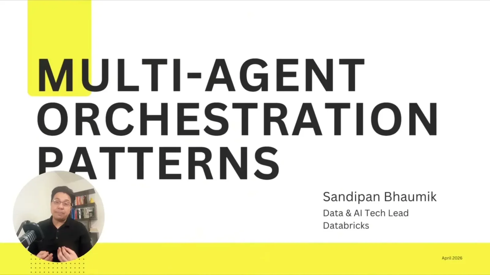
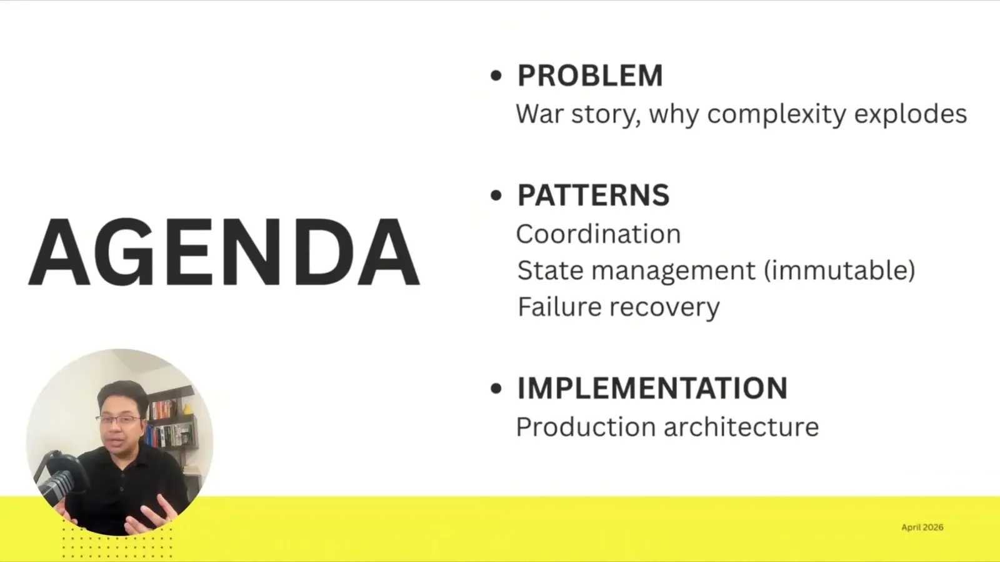
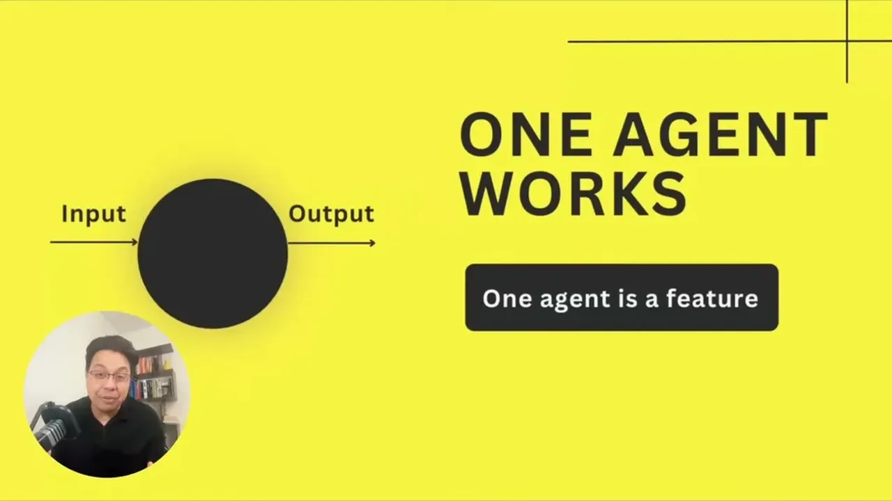
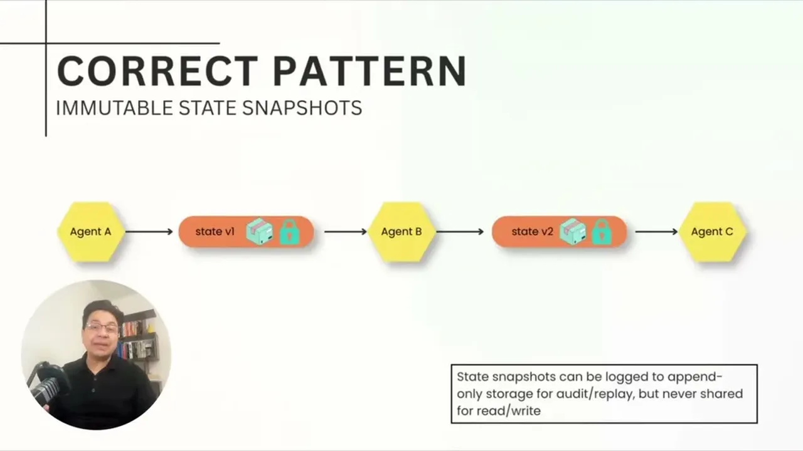
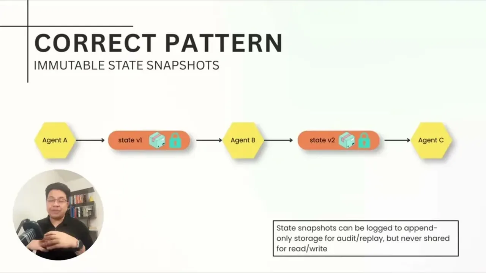
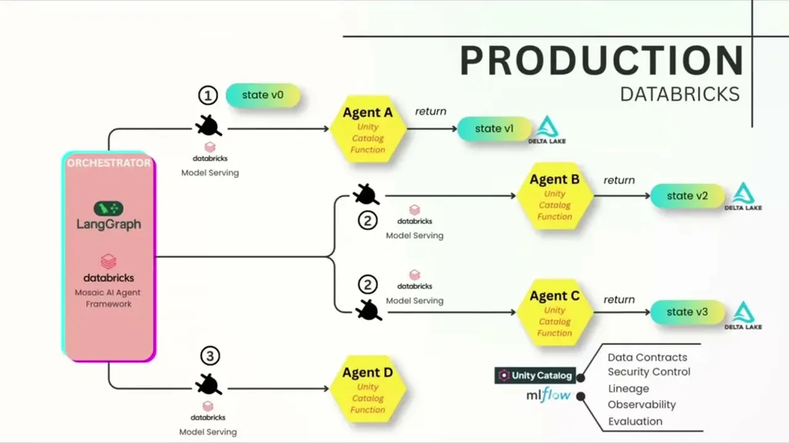
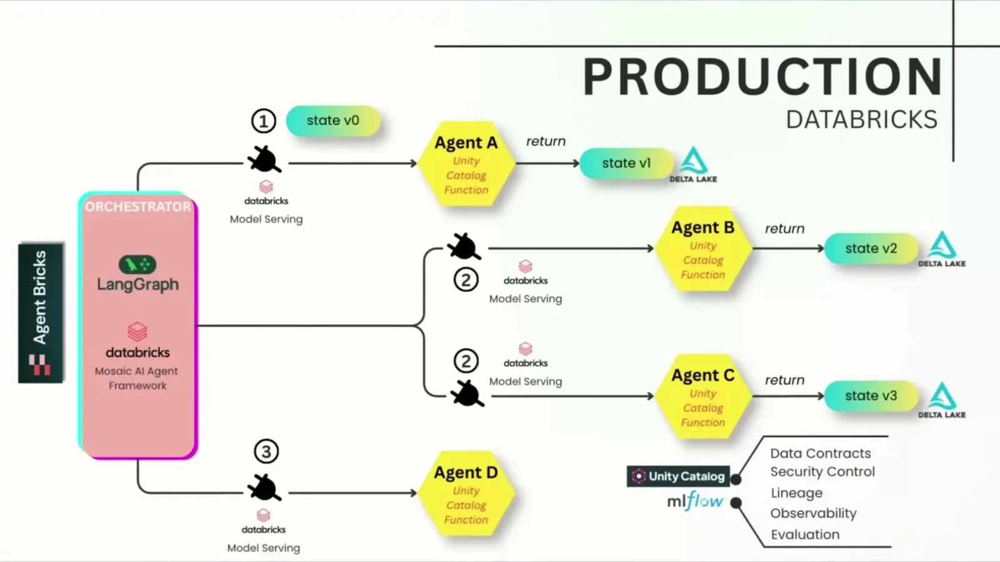
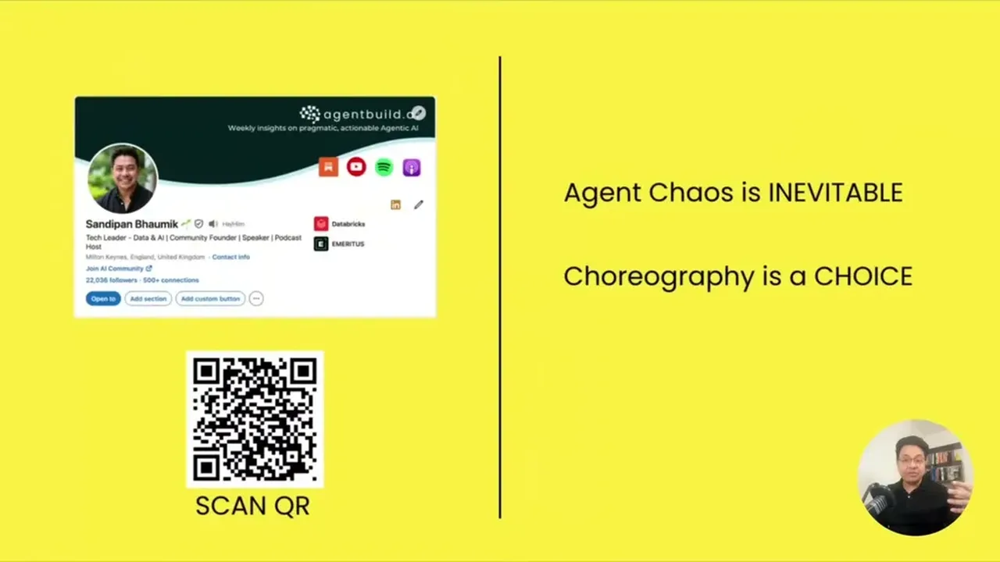
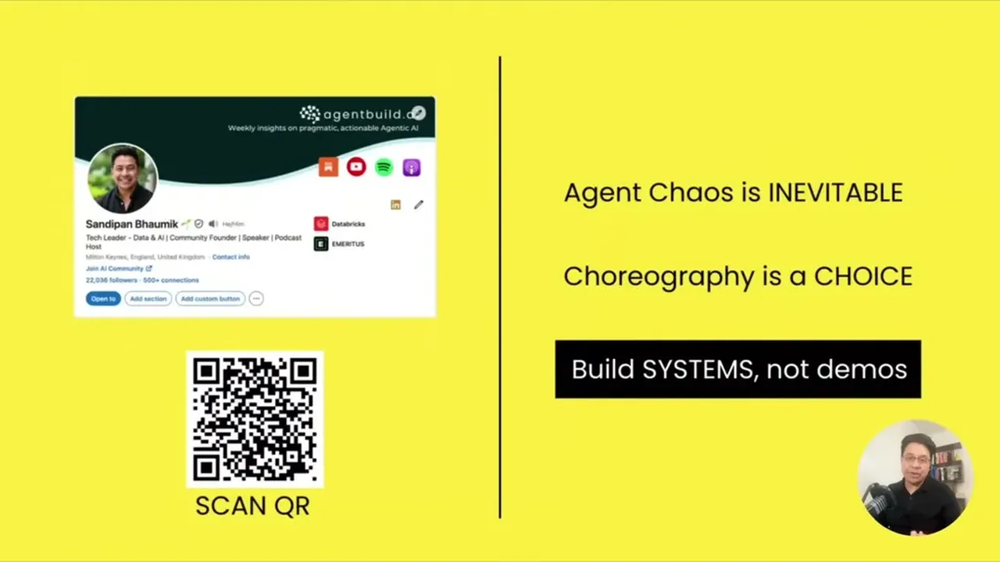

Names the specific coordination failure mode (a stale-cache race condition between two agents that produced a 20% incorrect-decision rate in a financial-services production system) and the concrete patterns used to fix the class of bug: ...
This traces the talk stale-cache incident into the fix patterns it recommends next; the exact wiring between orchestration and the state patterns is our inference, not a diagram shown on screen (ours).
“it doesn't get just five times harder. It gets 25 times more complex. Coordination complexity grows exponentially.”
said at 04:44“In 3 days' time, we started seeing weird approvals. Uh 20% of the decisions had incorrect risk ratings.”
said at 02:38“Credit score agent calculated a score of 750 and wrote to the database. The risk assessment agent, on the other hand, read from the database 500 milliseconds later and got a score of 680 for the same customer.”
said at 03:09“However, the nightmare of choreography is debugging. When something fails, you're playing detective with no real clue.”
said at 06:50“Agents are dumb. They just take the input, they do the work, they return the output. The orchestrator does all the smart coordination.”
said at 08:58“Simple workflow, high autonomy, you go with choreography. You need complex workflow with low autonomy tolerance, you go with orchestration.”
said at 10:01“It prevents race conditions on shared state. No stale reads. It provides a clear lineage.”
said at 14:45“If confidence is below 0.7, it will reject the handoff.”
said at 15:47“If agent B fails repeatedly, say five times in a row, the circuit breaker opens.”
said at 16:49“Every agent has two methods, execute and compensate. Execute does the work. Compensate rolls it back, undoes it.”
said at 18:54(ours) The talk maps its patterns to specific Databricks components (LangGraph as orchestrator, Unity Catalog for contracts, MLflow for tracing, AI Gateway for circuit breakers), but the underlying patterns, immutable versioned state, circuit breakers, saga compensation, are generic distributed-systems patterns and not specific to that stack.









| Stance | Claim | t |
|---|---|---|
| asserts | Moving from one to five agents doesn't get five times harder; coordination complexity grows exponentially, roughly 25 times more complex. | 04:44 |
| asserts | A five-agent credit-decisioning deployment produced weird approvals within three days, with 20% of decisions carrying incorrect risk ratings. | 02:38 |
| asserts | The credit-score agent wrote a score of 750 while the risk-assessment agent read a stale cached score of 680 for the same customer 500 milliseconds later. | 03:09 |
| warns | Choreography is a debugging nightmare when something fails, because there's no central coordinator to trace through. | 06:50 |
| asserts | In orchestration, agents are deliberately kept simple; the orchestrator alone handles the smart coordination, execution graph, retries, and logging. | 08:58 |
| recommends | Choose choreography for simple, high-autonomy workflows and orchestration for complex workflows with low autonomy tolerance. | 10:01 |
| recommends | Immutable, versioned state handoffs between agents prevent race conditions and stale reads and provide a clear lineage of what each agent produced. | 14:45 |
| recommends | A circuit breaker opens after an agent fails repeatedly, such as five times in a row, so subsequent calls fail fast instead of waiting for a timeout. | 16:49 |
| recommends | Every agent should implement both an execute and a compensate method so failures can be rolled back by walking backward through completed steps. | 18:54 |
| recommends | A data contract can reject a handoff outright, such as when a confidence score falls below 0.7, catching bad data at the boundary instead of downstream. | 15:47 |
Machine-readable copy embedded in this page (script#ontology) and in the corpus ontology.